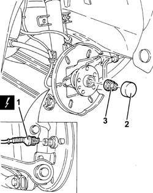
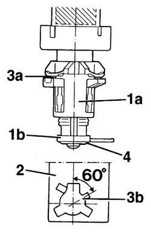
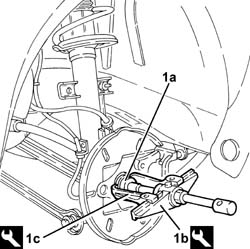
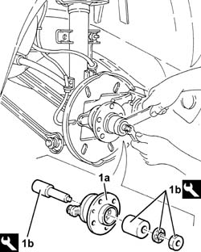
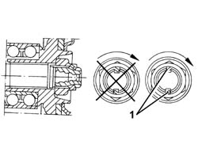

4450D10 hub of one rear wheel, l/h or r/h - r+r with wheel removed
- Path
- Procedures > 44 SUSPENSION AND WHEELS > 4450 WHEELS AND HUBS > 4450D rear wheel hubs > 4450D10 hub of one rear wheel, l/h or r/h - r+r with wheel removed
- Kind
- repair procedure (removal / refitting; the operation number is the code)
- Applies to
- all engines; all production periods
- Interactive page
- https://sloeber94.github.io/elrnDB-a156/en/#/3238238
Applies to: all engines; all production periods
 Removing
Removing
 Refitting
Refitting4450B11 WHEEL (one) rear - R.R.
1. Disconnect the electrical connection for the rear active A.B.S. sensor.
 | Name | Connector |
|---|---|---|
1 | Rear wheel sensor left for ABS |
| Name | Connector |
|---|---|---|
1 | Rear wheel sensor right for ABS |
2. Remove the rear hub cover.
3. Remove the bevel an undo the wheel hub nut.

Applies to: all engines; all production periods
1. Remove the rear wheel hub (1a), complete with bearing and active A.B.S. sensor, using the tools (1b) and (1c).
 | Name | Country |
|---|---|---|
1b | Extractor | 1.821.134.000 |
| Name | Country |
|---|---|---|
1c | Counter weight | 1.821.161.000 |

Applies to: all engines; all production periods
Remove the bearing outer track, as necessary, from the stub axle using a chisel. Wear protective goggles.
1. Remove the bearing outer race (1a), using the extractor (1b) and the clamps (1c).
| Name | Country |
|---|---|---|
1b | Extractor | 1.840.005.200 |
| Name | Country |
|---|---|---|
1c | Clamps | 1.840.005.103 |

Applies to: all engines; all production periods
Refitting
Removing1. Fit the rear wheel hub (1a), complete with bearing and active A.B.S. sensor, using the tool (1b).
| Name | Country |
|---|---|---|
1b | Tool for Extracting/Fitting | 1.870.665.000 |

Applies to: all engines; all production periods
Tighten the rear wheel hub nut to torque.
 | Fastening | Component | Ø | Value (daNm) |
|---|---|---|---|---|
- | Nut | HUB WITH BEARING (WITH INSTRUMENTS) | M24 | 30.4 - 33.6 |
1. Using a chisel, stake the nut collar twice, as illustrated.

Applies to: all engines; all production periods
Fit the rear hub cover.
Connect the electrical connection for the rear active A.B.S. sensor.
| Name | Connector |
|---|---|---|
- | Rear wheel sensor left for ABS |
| Name | Connector |
|---|---|---|
- | Rear wheel sensor right for ABS |
4450B11 WHEEL (one) rear - R.R.
Check and, if necessary, adjust the wheel geometry 4450A40 rear wheel geometry - check using optical equipment .
Topics linked from this page (5)
- 3310B48 rear brake disc - r r
- 4450A40 rear wheel geometry - check using optical equipment
- 4450B11 WHEEL (one) rear - R.R.
- K75 Rear wheel sensor left for ABS
- K76 Rear wheel sensor right for ABS